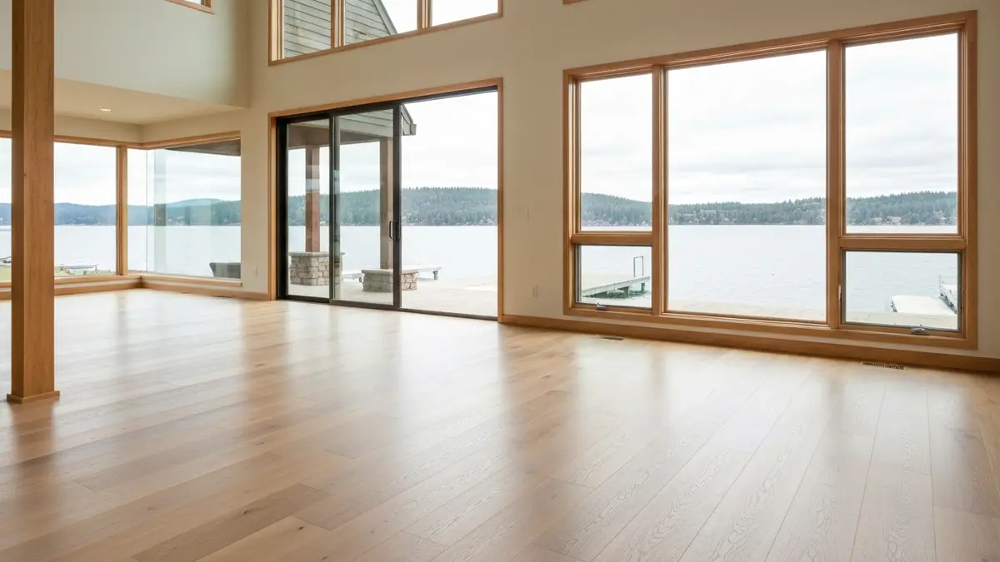

Coeur d'Alene is the crown jewel of North Idaho, a resort city of approximately 55,000 residents nestled on the shores of Lake Coeur d'Alene in Kootenai County. Known worldwide for its stunning waterfront, the historic downtown Sherman Avenue shopping district, and the legendary Coeur d'Alene Resort, this community draws both year-round residents and seasonal visitors who demand the finest in home quality. From luxury lakefront estates along the eastern shore to Craftsman-style homes in the established neighborhoods near Tubbs Hill, Coeur d'Alene properties feature some of the most impressive hardwood floors in the Inland Northwest. Selkirk Hardwood brings NWFA-certified expertise across the state line, serving Coeur d'Alene homeowners with the same precision installation and refinishing work that has built our reputation throughout the greater Spokane region. Whether you are restoring original hardwood in a historic Fourth Street home or installing wide-plank white oak in a new lakeside build, our team understands the unique demands of North Idaho living.

Our Hardwood Flooring Process
- Free In-Home Consultation — We visit your Coeur d'Alene home to assess your floors and discuss options.
- Wood Selection — Choose from oak, maple, walnut, hickory, and other premium hardwood species.
- Professional Installation or Sanding — Expert installation of new floors or precision sanding of existing hardwood.
- Staining & Finishing — Custom stain colors and durable polyurethane or oil finishes applied.
- Final Walkthrough — We inspect every detail and ensure you're completely satisfied with the result.
Why Coeur d'Alene Homeowners Trust Selkirk Hardwood
- NWFA-certified craftsmen — Fully trained in solid and engineered hardwood installation, with specific experience in lakefront and high-humidity environments common around Lake Coeur d'Alene.
- Licensed, bonded, and insured — Complete protection and accountability on every Coeur d'Alene project, from downtown Sherman Avenue homes to Fernan Hill Road estates.
- Climate-smart acclimation — We allow 5 to 7 days for wood to acclimate to North Idaho's unique moisture conditions before any installation begins, preventing warping and gapping.
- No travel surcharge — Coeur d'Alene is just 33 miles from Spokane on I-90 and we serve the entire Kootenai County area at standard rates.

Frequently Asked Questions — Hardwood Floor Installation and Refinishing in Coeur d'Alene
Do you serve Coeur d'Alene even though you're based in Spokane?
Yes. Coeur d'Alene is just 33 miles east of Spokane along I-90, and we serve the entire Kootenai County area regularly. There is no travel surcharge for Coeur d'Alene projects. Many of our clients own lakefront homes and properties in the downtown Sherman Avenue district.
How much does hardwood flooring cost in Coeur d'Alene?
Hardwood floor installation in Coeur d'Alene typically costs $7 to $14 per square foot for materials and labor, while refinishing runs $3 to $8 per square foot. Lakefront and luxury properties with larger square footage or specialty wood may fall at the higher end. We provide free in-home estimates for all Coeur d'Alene homes.
What types of hardwood work best in Coeur d'Alene's climate?
North Idaho's climate features cold winters and moderate humidity from Lake Coeur d'Alene. We recommend white oak, hickory, and maple for their stability in fluctuating conditions. Proper acclimation before installation is essential, and we allow a minimum of 5 to 7 days for wood to adjust to your home's environment before beginning work.
Need Hardwood Flooring in Coeur d'Alene? Call Now
We're your local hardwood flooring experts serving Coeur d'Alene and all surrounding areas.
📞 Call (509) 461-9375